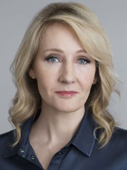

Джоан Роулинг
| Имя | Джоан Роулинг (Joanne Rowling) |
| День рождения | 31 июля 1965 (56 лет) |
| Место рождения | Йейт, Бристоль, Англия |
| Рост | 165 см |
| Вес | 60 кг |
| Семейное положение | в браке |
| Карьера | писательница |
| Знак Зодиака | Лев |
| Восточный гороскоп | Змея |
| Фото |  |
Содержание
- Детство и юношеские годы
- Как Роулинг придумала «Гарри Поттера»
- Успех «Гарри Поттера» и мировая известность
- Карьера после «Гарри Поттера»
- Личная жизнь Джоан Роулинг
ДЕТСТВО И ЮНОШЕСКИЕ ГОДЫ
Будущая писательница родилась в небольшом городке Йейт, расположенном в графстве Южный Глостершир, в двадцати километрах от Бристоля. Ее родители, Питер Джеймс Роулинг и Энн Волант, познакомились в поезде, следующем с лондонского вокзала King’s Cross в Шотландию. По дороге девушка замерзла, и Питер как истинный джентльмен предложил ей пальто. Их свадьба состоялась год спустя, молодоженам на тот момент было всего по двадцать лет. Кстати, станция King’s Cross стала одной из ключевых локаций волшебного мира, созданного их старшей дочерью Джоан. Сейчас на платформе 9 ¾ оборудована фотозона для почитателей Гарри Поттера.
Поженившись, чета Роулинг обосновалась в Южном Глостершире, в маленьком городке Йейт с населением около двадцати тысяч человек. Питер устроился авиаинженером в бристольский филиал концерна Rolls Royce, Энн занималась научной деятельностью.
Джоан родилась 31 июля 1965 года в родильном доме Чиппинг Содбери. Родители ждали мальчика, которому даже придумали имя Джон. Через два года на свет появилась вторая дочь Диана, и с мечтами о наследнике пришлось расстаться окончательно.
Когда Джоан исполнилось четыре года, семья переехала в соседний городок Уинтерборн. Там девочка пошла в начальную школу Святого Михаила. Есть предположение, что директор этого учебного заведения, Альфред Данн, стал прототипом директора школы Гарри Поттера — Альбуса Дамблдора.
Пять лет прожив в Уинтерборне, Роулинги снова переехали — на этот раз в деревню Татсхилл, расположенную на границе с южным Уэльсом. Семья поселилась в уютном старинном особняке в готическом стиле, в котором раньше была местная школа. Из окна спальни Джоан открывался изумительный вид на сад и устье реки, в доме имелся чулан, ведущий в подвал, и чердак, заваленный разнообразными старинными предметами. Не удивительно, что именно в этом доме в голове Джоан стали рождаться сказочные образы, которые позже воплотились в ее книгах. В 1995 году коттедж приобрел продюсер ВВС Джулиан Мерсер, который сохранил всю обстановку практически в первозданном виде. А в 2019 писательница вернула себе дом детства
, выкупив его за 500 тысяч фунтов.
Из-за частых переездов у юной Джоан практически не было друзей, кроме родной сестры Дианы. Она читала ей сказки и придумывала собственные истории, которые девочка слушала затаив дыхание. Свой первый рассказ —про мистера Кролика и мисс Пчелу — Роулинг сочинила в 6 лет. Диана была в полном восторге и требовала от сестры продолжения. Так одна за другой стали рождаться небольшие сказочные истории, которые спустя некоторое время стали основой ее творчества.
В Татсхилле Джоан посещала Wyedean School, где работала ее мать. Училась девочка неплохо, особенно хорошо ей давались история, иностранные языки и литература. Учительница английского языка гордилась своей ученицей и зачитывала ее сочинения перед всем классом, тем самым мотивируя Джо на дальнейшую писательскую деятельность.
Когда девушке исполнилось пятнадцать лет, у Энн Роулинг диагностировали рассеянный склероз. С отцом у Джоан отношения и так складывались не лучшим образом, а болезнь матери сделала обстановку в доме еще больше напряженной и угнетающей. Девочке ничего не оставалось, кроме как запираться в своей комнате и погружаться в мир вымышленных персонажей, который помогал ей отвлечься от суровой реальности.
Приятели у сестер Роулинг появились только после переезда в городок Винтербурн. По счастливому стечению обстоятельств фамилия одного из них была — Поттер. Как признается сама писательница, данная фамилия всегда нравилась ей значительно больше, чем ее собственная. Так как из-за фамилии Роулинг (созвучно с rolling pins) ее часто дразнили скалкой
.
После окончания школы Роулинг сделала попытку поступить в Оксфордский университет, но провалила экзамены и стала студенткой филфака Эксетерского университета. Помимо классической английской филологии она изучала французский, итальянский и испанский, а также историю древней Греции и Рима. Университетские друзья и педагоги, вспоминая о Роулинг, говорят, что она всегда была замкнутой и странноватой девушкой, густо красившей глаза и таскавшей с собой книги Толкиена и Диккенса.
В программу курса входил год обучения в Париже, который Джоан показался лучшим городом на земле. Это было чудесное время — девушка жила на съемной квартире с испанцем, итальянцем и русским, жадно впитывала незнакомую культуру и чувствовала себя свободной и счастливой.
КАК РОУЛИНГ ПРИДУМАЛА «ГАРРИ ПОТТЕРА»
Если бы не несчастная любовь, вероятно, мир бы не увидел одной из самых популярных фэнтези-серий в современной литературе. Успешно окончив Эксетер в 1986 году, Роулинг переехала в Лондон и устроилась секретарем-переводчиком в Международную амнистию
— неправительственную организацию, занимавшуюся защитой прав франкоязычного населения стран Африки.
В Лондоне Джоан впервые влюбилась и со своим молодым человеком переехала в Манчестер. Их роман продлился недолго, и в скором времени она уже возвращалась обратно, глотая слезы в переполненном вагоне. Поезд задержали на четыре часа, и именно в этот момент в ее голове родился образ худенького черноволосого мальчугана в смешных круглых очках, наделенного сверхъестественным магическим даром. У Джоан не было под рукой даже ручки, чтобы зафиксировать ход своих мыслей, и она уже не могла дождаться, когда попадет домой. Зайдя в квартиру, девушка тут же бросилась к письменному столу и просидела за ним до утра, написав несколько глав своего первого романа Философский камень
.
У Джоан не было сомнений, как она назовет своего героя — имя Гарри ей нравилось с самого детства, а фамилия Поттер принадлежала близкому другу. Писательница поделилась с юным волшебником своим днем рождения, а образ Гермионы списала с самой себя в одиннадцатилетнем возрасте.
В конце 1990 года умерла мать Джоан, что стало для нее огромной трагедией. Свои переживания писательница отразила на бумаге — Гарри Поттер тоже прошел через потерю родителей, а его оппонент и главный злодей одержим навязчивой идеей победить смерть.
Решив начать жизнь с чистого листа, Джоан переехала в Португалию и там устроилась на работу преподавателем английского языка. Полтора года спустя она познакомилась в баре с тележурналистом Хорхе Арантесом, за которого вышла замуж в октябре 1992. Первая беременность закончилась выкидышем, во время второй Джоан приходилось преподавать практически до самых родов, так как супруг никак не мог найти постоянную работу.
27 июля 1993 года на свет появилась малышка Джессика Изабель, но уже вовсю трещавший по швам брак ее рождение скрепить так и не смогло. По характеру вспыльчивый и неуравновешенный, Хорхе по малейшему поводу срывался на жену и даже поднимал на нее руку.
Не в силах больше терпеть такого отношения, Джоан ушла от мужа, забрав пятимесячную дочь и чемоданчик с рукописями. В канун нового 1994 года она переехала к сестре в Эдинбург. Первое время она жила на пособие и находилась в глубочайшей депрессии, не понимая, какое будущее ждет ее и ребенка. К тому же бывший супруг не оставлял попыток вернуть непокорную жену и грозился отобрать у нее дочь.
Джоан все же удалось избавиться от Хосе — заручившись поддержкой государства, она подала на развод и в 1994 году расторгла ненавистный брак. Примерно в это же время она закончила свой первый роман и приступила ко второму, который приходилось писать в соседнем кафе, пока малышка Джессика спала в коляске. Посещая курсы учителей при Эдинбургском университете, Роулинг получала пособие в размере семидесяти фунтов, которого не хватало даже на покупку игрушек для ребенка.
От суицида Джоан спасла любовь к дочери и работа над книгой, закончить которую она хотела любой ценой. Черная полоса в жизни писательницы не смогла не отразиться в ее творчестве, и в романе появились дементоры — ужасные слепые существа, питающиеся светлыми воспоминаниями и положительными эмоциями людей и высасывающие из них душу.
УСПЕХ «ГАРРИ ПОТТЕРА» И МИРОВАЯ ИЗВЕСТНОСТЬ
Оказалось, что написать книгу — это еще полдела, главное, найти издателя, который согласится выпустить ее в тираж. В 1995 году, окончив работу над первым романом Философский камень
, Джоан разослала копии рукописей в двенадцать издательств и во всех получила отказ. Только через год редактор лондонского издательства Bloomsbury Барри Каннингем дал согласие на публикацию книги, да и то только после того, как ею заинтересовалась его восьмилетняя дочь.
Первый тираж составил 1000 экземпляров, а спустя пять месяцев роман получил премию British Book Award как лучшая детская книга года. В начале 1998 года в США был проведен аукцион на право публикации Философского камня
, который выиграло издательство, предложившее автору 105 тысяч долларов. Для Джоан это были неслыханные деньги, она еще долго не могла поверить своему счастью.
Вторая часть романа, Гарри Поттер и тайная комната
, вышла в свет в 1998 году. За нее Роулинг получила престижную премию Smarties, как и за третью — Гарри Поттер и узник Азкабана
, изданную годом позже. А студия Warner Brothers приступила к съемкам экранизации романа. Роулинг поставила условие: все актеры саги должны быть британцами. В итоге долгого кастинга утвердился блестящий актерский состав, украшением которого стали юные Дэниел Рэдклифф, Руперт Гринт и Эмма Уотсон.
Четвертая книга Гарри Поттер и Кубок огня
побила все рекорды продаж в США и Великобритании — практически весь тираж разошелся в считанные дни. Следующие три части ждал не меньший успех — они стабильно становились мировыми бестселлерами и били все рекорды продаж. Но важнее всего было то, что книги о Гарри Поттере вернули молодежной аудитории интерес к чтению, практически утраченный с приходом в современную жизнь телевидения и компьютерной техники.
В 2004 году Роулинг стала первой женщиной-миллионером по версии Форбс, добившейся успеха именно благодаря своим книгам. В 2017 Роулинг возглавила рейтинг европейских знаменитостей с самым большим доходом, ее годовой заработок составлял около 100 миллионов долларов.
КАРЬЕРА ПОСЛЕ «ГАРРИ ПОТТЕРА»
В 2011 году стало известно, что Роулинг сменила литературного агента и приступила к написанию книг для взрослой аудитории. Осенью 2012 свет увидел социальный роман Случайная вакансия
, который за первые три недели разошелся тиражом более миллиона экземпляров. В центре сюжета — место в городском совете, борьба за которое поднимает на уши это тихое местечко.
За ним последовала серия детективных романов о Корморайне Страйке, изданная под псевдонимом Роберт Гэлбрейт. Впрочем, то, что за этим именем скрывается Роулинг, раскрылось через три месяца после выхода первой книги из серии, Зов кукушки
. Писательница рассылала детективный роман под псевдонимам и столкнулась с многочисленными отказами. Редакторы назвали ее книгу невпечатляющей
(однако в прессе роман встретили тепло и назвали Роберта Гэлбрейта перспективным дебютантом). В итоге Зов кукушки
выпустило то же издательство, что и Случайную вакансию
, редактор у книг тоже был один и тот же — так пресса и установила реального автора.
ЛИЧНАЯ ЖИЗНЬ ДЖОАН РОУЛИНГ
Из-за горького опыта первого неудачного брака Роулинг долгое время не решалась снова выйти замуж. Но встреча с английским врачом-анестезиологом Нилом Майклом Мюрреем изменила ее жизнь — Джоан наконец-то обрела личное счастье и стала матерью еще двоих детей.
24 марта 2003 года у пары родился сын Дэвид Гордон Роулинг Мюррей, а через два года появилась на свет крошка Маккензи Джин Роулинг Мюррей (23.01.2005), которой писательница посвятила шестую книгу поттерианы
. Сейчас Роулинг с семьей живет в Шотландии, активно занимается благотворительностью и финансирует фонд по борьбе с рассеянным склерозом, от которого скончалась ее мать. Она много помогает неблагополучным семьям, матерям-одиночкам и брошенным детям, памятуя о тех тяжелых временах, когда с малолетней дочерью на руках пыталась выжить на мизерное пособие.